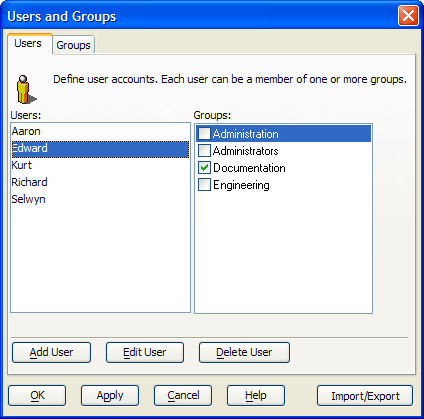

Users and Groups
DESKTOP
If you define individual user accounts, you specify the user name, password, and an optional startup script for when that user logs on. This also lets you define different startup menus for each application user. You can also specify what group each user belongs to.

To define users and groups, select Tools > Security > Define Users and Groups... to display the Users and Groups dialog box.
To add a new user:
Click Add User to display the Add New User dialog box.
Enter the User Name.
Enter the Password.
Re-enter the password in the Confirm Password field.
Optionally, select a script from the Startup Script list.
Click OK to add the new user or Cancel to quit.
To modify a user's settings, select a user from the Users list and click Edit User. This allows you to change the User Name, Password, or Startup Script fields.
To delete a user, select it from the Users list and click Delete User.
To create a group:
Display the Groups tab and click Add Group to display the Add New Group dialog box.
Enter the Group Name and click OK.
To edit a group, select the group in the Groups list and click Edit Group. This allows you to change the Group Name field.
To delete a group, select it from the Groups list and click Delete Group. Click OK to confirm the deletion.
To add a user to a group:
Display the Users tab.
Select the user in the Users list.
Place a check mark next to all groups that include the user.
Exporting User and Group Information
To export user and group information to an Alpha Anywhere database:
Click Import/Export.
Click Export User/Group Information.
Click OK.
The default name of the file will be User_group_info for
.Adb .Select where to store the file.
Click OK.
Importing User and Group Information
To import user and group information from an Alpha Anywhere database:
Click Import/Export.
Click Import User/Group Information.
Click OK.
Navigate to and select the User Accounts file to import.
Click OK.
Importing Windows User Information
To import Windows user information:
Click Import/Export.
Click Import Windows User Information.
Click OK to display the Select Users dialog.
In the Select users from list pick "Computer" or "Domain".
If you selected "Domain" in step 4, select a domain from the Domain Name list.
Click Get List.
Place a checkmark next to each user name that you wish to import.
Optionally, click Select All or Unselect All to speed your user selection.
Click OK to import names or Cancel to quit without taking any action.
Provide a default password for the new users.
Click OK.
Importing Windows Group Information
To import Windows group information:
Click Import/Export.
Click Import Windows Group Information.
Click OK to display the Select Groups dialog.
In the Select users from list pick "Computer" or "Domain".
If you selected "Domain" in step 4, select a domain from the Domain Name list.
Click Get List.
Place a checkmark next to each user group that you wish to import.
Optionally, click Select All or Unselect All to speed your user selection.
Click OK to import names or Cancel to quit without taking any action.
Logging in as a Different User
To log in as a different user:
Select Tools > Security > Log in as a Different User... to display the Changed Logged on User dialog box.
Click OK to confirm.
Select your User Name.
Enter your Password.
Click Login.
See Also
Setting Up Database Security, Object Permissions